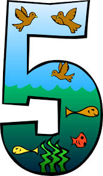

Web Application Project
Game Description
This is a sliding tile game. The player has three different options.
Ordering numbers, a picture, or the alphabet. The player clicks on
the tile they want to move and if it is next to the blank tile they swap
spaces. If there is no adjacent empty space then nothing will move.
If you would like to see an animated example check out this wikipedia page.
The object of the game is to order the tiles numerically, alphabetically,
or the images to create a larger image.
Puzzle Options Here
Option 1 - Numerical
|
|
 |
|
 |
|
|
|
Blank tile |
Preliminary Software design
Model
Constants:
TileArray An array of tile objects is created. This keeps track of the order of the tiles within the grid.
GridSize The grid will always be a predetermined size which correlates with the array size. Ex: 4x4 = 16 or 3x3 = 9 grid
Tile Objects:
There are two Types of Tile objects: One blank tile and multiple image tiles. Each tile will occupy one grid space and
have an assigned image and ID or available tiles to swap if blank tile. The logic for which tiles can be swapped is hardcoded.
Example: Slot 1 in a 3x3 grid can swap with slot 2 and slot 4. Slot 2 can swap with 1, 3, & 5. Slot 3 can swap with 2 & 6. etc
Image - A section of an image is assigned to each tile
ID - Each tile will have an ID stored in an array. The array keeps track of the order of the tiles.
Swap logic - As explained above each grid space can only swap with other predetermines spaces.
Game:
The game will have the following properties
Percentage Complete Bar- A status bar will tell the player how many tiles are in the correct spot.
Picture Selection - The player will have 3 choices of images to chose from
Functions/Methods:
The following functions could be methods of Tile or Game objects, but will be described as stand alone functions here.
availableToSwap() - Retrieves which tiles it may swap with.
swapTile() - When the selected tile is highlight and is adjacent to the blank tile it will swap positions.
startGame() - This will randomize the tiles within the grid
isInOrder() - After a tile is moved the array will be checked to see if its in order.
gameComplete() - If the array of tiles is ordered then a promote saying the game is won will appear.
changePicture() - A list of the images that can be played will appear and can be selected from
timerStart() - When the startGame() method is called the timerStart() will be called.
displayTime() - Displays the current running time of the game
endGame() - The time is stopped and a message box stating the user has quit will appear. A conformation Y or N will be asked for